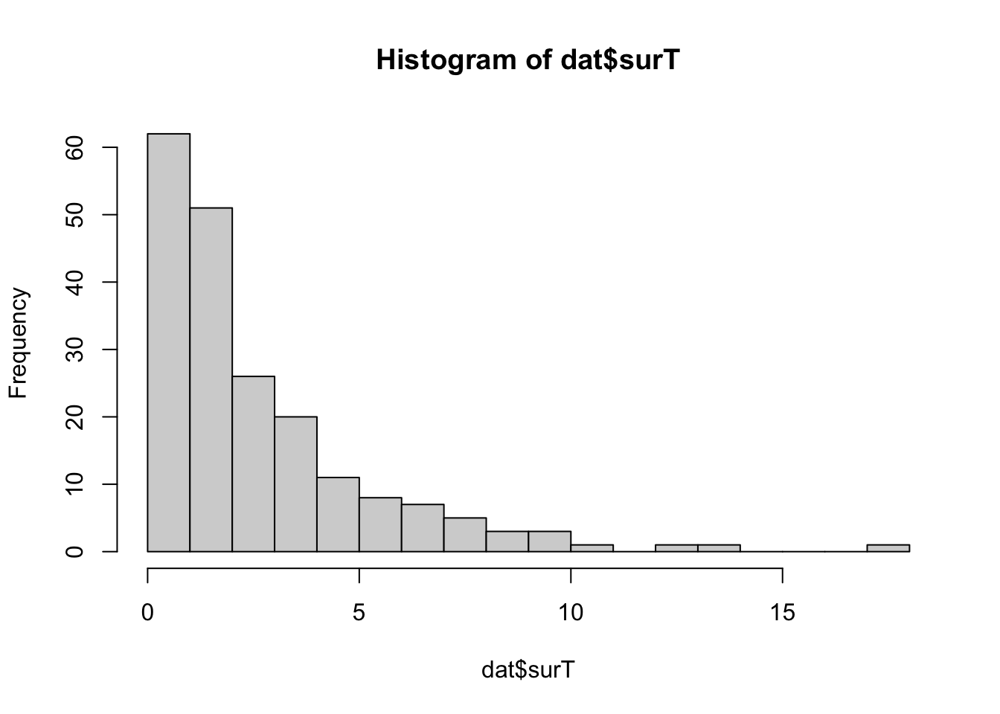
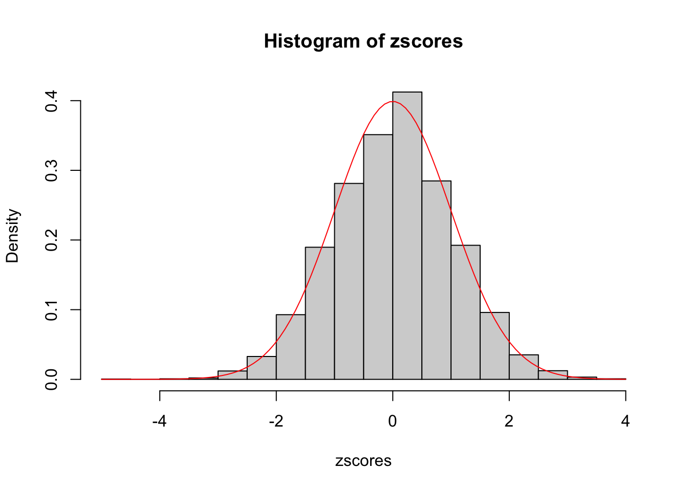

Last updated: 2023-02-14
Checks: 7 0
Knit directory: survival-susie/
This reproducible R Markdown analysis was created with workflowr (version 1.6.2). The Checks tab describes the reproducibility checks that were applied when the results were created. The Past versions tab lists the development history.
Great! Since the R Markdown file has been committed to the Git repository, you know the exact version of the code that produced these results.
Great job! The global environment was empty. Objects defined in the global environment can affect the analysis in your R Markdown file in unknown ways. For reproduciblity it’s best to always run the code in an empty environment.
The command set.seed(20230201) was run prior to running the code in the R Markdown file. Setting a seed ensures that any results that rely on randomness, e.g. subsampling or permutations, are reproducible.
Great job! Recording the operating system, R version, and package versions is critical for reproducibility.
Nice! There were no cached chunks for this analysis, so you can be confident that you successfully produced the results during this run.
Great job! Using relative paths to the files within your workflowr project makes it easier to run your code on other machines.
Great! You are using Git for version control. Tracking code development and connecting the code version to the results is critical for reproducibility.
The results in this page were generated with repository version c73e4ed. See the Past versions tab to see a history of the changes made to the R Markdown and HTML files.
Note that you need to be careful to ensure that all relevant files for the analysis have been committed to Git prior to generating the results (you can use wflow_publish or wflow_git_commit). workflowr only checks the R Markdown file, but you know if there are other scripts or data files that it depends on. Below is the status of the Git repository when the results were generated:
Ignored files:
Ignored: .DS_Store
Ignored: .Rhistory
Ignored: .Rproj.user/
Ignored: analysis/.DS_Store
Ignored: analysis/.RData
Ignored: analysis/.Rhistory
Ignored: analysis/run_ser_simple_dat_cache/
Unstaged changes:
Modified: analysis/check_coxph_fit.Rmd
Deleted: analysis/one_predictor_investigation.Rmd
Note that any generated files, e.g. HTML, png, CSS, etc., are not included in this status report because it is ok for generated content to have uncommitted changes.
These are the previous versions of the repository in which changes were made to the R Markdown (analysis/null_model_demo.Rmd) and HTML (docs/null_model_demo.html) files. If you’ve configured a remote Git repository (see ?wflow_git_remote), click on the hyperlinks in the table below to view the files as they were in that past version.
| File | Version | Author | Date | Message |
|---|---|---|---|---|
| Rmd | c73e4ed | yunqiyang0215 | 2023-02-14 | wflow_publish("analysis/null_model_demo.Rmd") |
Here I first simulate survival data from exponential distribution without censoring. I simulate one variable and the true model is the null model, that is, the variable is not associated with survival time \(T\). From fitting the cox proportional hazard model on the data, we characterize the distribution of z-scores.
1. To characterize the distribution of survival time \(T\), people often consider 4 functions, which are interrelated. Their relationships can be derived, here I just summarize the facts:
probability density function, f(t). \(f(t)=\lambda(t)S(t)\)
survival function, S(t). \(S(t)=1-F(t)\)
hazard function, \(\lambda(t)\). \(\lambda(t)=f(t)/S(t)=-\frac{\partial}{\partial t}\log S(t)\).
cumulative hazard function, \(\Lambda(t)\). \(\Lambda(t)=\int_0^t\lambda(s)d s\).
2. Parametric distribution for \(T\): exponential distribution
In exponential distribution, the hazard (instantaneous rate at time \(t\)) is constant over time. \[ \begin{split} f(t)&=\frac{1}{\mu}\exp\{-t/\mu\}\\ \lambda(t)&=\frac{1}{\mu} \end{split} \]
3. Model the mean of survival time:
Remember in exponential distribution, \(E(T)=\mu\). So we can model \(\log\mu\) by linear combinations of variables. \(i\) indexes an individual. Let’s call this generative model, because I simulate \(T_i\) from \(\exp(\mu_i)\).
\[ \begin{split} \log T_i &= \log E(T_i) + \epsilon_i=\log\mu_i+\epsilon_i\\ \log\mu_i &=\beta_0+\beta ^Tx_i \end{split} \]
4. Cox proportional hazard model:
Cox proportional hazard (cox-ph) model is a model for the hazard \(\lambda(t)\), not the survival time. It has a form of the following, where \(\lambda_0\) is the baseline hazard and \(x\) (length-p vector) denotes attributes of an individual that increase/decrease his hazard. For example, high BMI may increase the hazard of getting diabetes.
\[ \lambda_i(t)=\lambda_0\exp\{\alpha_0+\alpha^Tx_i\} \]
Cox-ph model is a semi-parametric model, where the baseline hazard function \(\lambda_0\) can be left unspecified. The inference carries out only in \(\alpha_0, \alpha\).
5. Relationship between our generative model and cox-ph:
As mentioned above, when assuming \(T\) follows exponential distribution, we have \(\lambda=1/\mu\), again this means the hazard is constant over time. Here I mainly want to show the relationship between \(\alpha\) in coxph and \(\beta\) in our generative model.
\[ \begin{split} \lambda_i=1/\mu_i&=\frac{1}{\exp\{\beta_0+\beta^Tx_i\}}=\frac{1}{\mu_0\exp\{\beta^Tx_i\}}\\ &=\lambda_0\exp\{-\beta^Tx_i\}=\lambda_0\exp\{-\alpha^Tx_i\} \end{split} \]
Therefore, \(\alpha = -\beta\). That is to say, if I generate a model with \(\beta_1=1\) and fit the survival data to cox-ph model, the coefficient I get is \(\alpha\), which is -1.
library(mvtnorm)
library(survival)
# Modified Karl's code for intercept part
devtools::load_all("/Users/nicholeyang/Desktop/logisticsusie")ℹ Loading logisticsusieLet’s do the simplest case, where we only have one variable and is not associated with survival time.
# Here we use parametric model to simulate data with survival time,
# assuming survival time is exponentially distributed.
# We first simulate the mean of exponential from linear combinations
# of variables, and then simulate survival time.
# T\sim 1/u*exp(-t/u), and the true model is:
# log(T) = \mu + e = b0 + Xb + e
# @param b: vector of length (p+1) for true effect size, include intercept.
# @param X: variable matrix of size n by p.
# @param status: censoring status. 1 = censored, 2 = event observed.
sim_dat <- function(b, X){
n = nrow(X)
p = ncol(X)
mu <- exp(cbind(rep(1,n), X) %*% b)
surT <- rexp(n, rate = 1/mu)
dat <- data.frame(cbind(surT, X))
x.name <- unlist(lapply(1:p, function(i) paste0("x", i)))
names(dat) = c("surT", x.name)
dat$status <- rep(2, n)
return(dat)
}set.seed(1)
n = 200
b = c(1, 0) # True beta coefficients, first element is intercept.
X = as.matrix(rnorm(n, mean = 3, sd = 2))
dat = sim_dat(b, X)
hist(dat$surT, breaks = 20)
## Create survival object. status == 2 is death
dat$y <- with(dat, Surv(surT, status == 2))
cox1 <- coxph(y ~ x1, data = dat)
summary(cox1)Call:
coxph(formula = y ~ x1, data = dat)
n= 200, number of events= 200
coef exp(coef) se(coef) z Pr(>|z|)
x1 -0.001999 0.998003 0.042125 -0.047 0.962
exp(coef) exp(-coef) lower .95 upper .95
x1 0.998 1.002 0.9189 1.084
Concordance= 0.512 (se = 0.02 )
Likelihood ratio test= 0 on 1 df, p=1
Wald test = 0 on 1 df, p=1
Score (logrank) test = 0 on 1 df, p=1seeds = c(1:5e3)
n = 200
b = c(1, 0)
zscores <- rep(NA, 5e3)
for (seed in seeds){
set.seed(seed)
X = as.matrix(rnorm(n, mean = 3, sd = 2))
dat = sim_dat(b, X)
## Create survival object. status == 2 is death
dat$y <- with(dat, Surv(surT, status == 2))
cox <- coxph(y ~ x1, data = dat)
zscores[seed] = coef(summary(cox))[,"z"]
}x = seq(-3, 3, length.out = 1e3)
hist(zscores, probability = TRUE)
# The red line is the density of N(0,1)
curve(dnorm(x, mean = 0, sd = 1), add = TRUE, col = "red")
sessionInfo()R version 4.1.1 (2021-08-10)
Platform: x86_64-apple-darwin20.6.0 (64-bit)
Running under: macOS Monterey 12.0.1
Matrix products: default
BLAS: /usr/local/Cellar/openblas/0.3.18/lib/libopenblasp-r0.3.18.dylib
LAPACK: /usr/local/Cellar/r/4.1.1_1/lib/R/lib/libRlapack.dylib
locale:
[1] en_US.UTF-8/en_US.UTF-8/en_US.UTF-8/C/en_US.UTF-8/en_US.UTF-8
attached base packages:
[1] stats graphics grDevices utils datasets methods base
other attached packages:
[1] logisticsusie_0.0.0.9004 testthat_3.1.0 survival_3.2-11
[4] mvtnorm_1.1-3 workflowr_1.6.2
loaded via a namespace (and not attached):
[1] xfun_0.27 bslib_0.4.1 remotes_2.4.1 purrr_0.3.4
[5] splines_4.1.1 lattice_0.20-44 vctrs_0.3.8 usethis_2.1.3
[9] htmltools_0.5.2 yaml_2.2.1 utf8_1.2.2 rlang_1.0.6
[13] pkgbuild_1.2.0 jquerylib_0.1.4 later_1.3.0 pillar_1.6.4
[17] glue_1.4.2 withr_2.5.0 sessioninfo_1.1.1 matrixStats_0.63.0
[21] lifecycle_1.0.1 stringr_1.4.0 devtools_2.4.2 evaluate_0.14
[25] memoise_2.0.1 knitr_1.36 callr_3.7.0 fastmap_1.1.0
[29] httpuv_1.6.3 ps_1.6.0 fansi_0.5.0 highr_0.9
[33] Rcpp_1.0.8.3 promises_1.2.0.1 cachem_1.0.6 desc_1.4.0
[37] pkgload_1.2.3 jsonlite_1.7.2 fs_1.5.0 digest_0.6.28
[41] stringi_1.7.5 processx_3.5.2 rprojroot_2.0.2 grid_4.1.1
[45] cli_3.1.0 tools_4.1.1 magrittr_2.0.1 sass_0.4.4
[49] tibble_3.1.5 crayon_1.4.1 whisker_0.4 pkgconfig_2.0.3
[53] ellipsis_0.3.2 Matrix_1.5-3 prettyunits_1.1.1 rmarkdown_2.11
[57] rstudioapi_0.13 R6_2.5.1 git2r_0.28.0 compiler_4.1.1